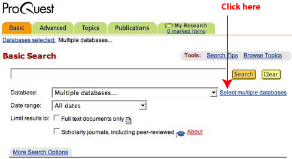

Go to the Library's website at http://lib.lbcc.edu.
Access the ProQuest database. If you need the password, stop by the LAC or PCC Library and pick up a list of the current passwords to electronic resources.
Click on the link to “Select multiple databases.”

By default, all datababases are selected. To deselect them, click on “Clear all databases.”
Scroll to the bottom of the page.
Select “ProQuest Historical Newspapers Los Angeles Times” by checking the box in front of the title.
Then, click on “Continue.” You are now ready to enter your search.
Select the “On this date” radio button, and then enter your date of birth in the format of mm/dd/yyyy. And finally, click on the “Search” button to enter your search.
That's it! You will retrieve a list of articles published on your date of birth. Select an article of interest to you and print it. As always, if you need assistance, ask a librarian.